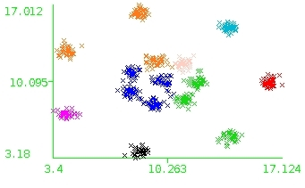
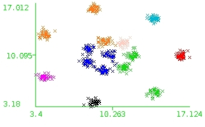
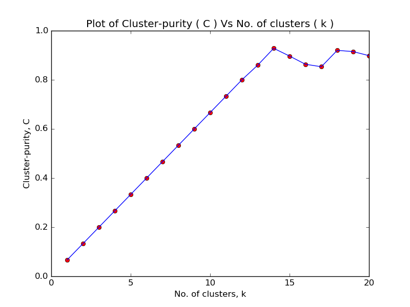
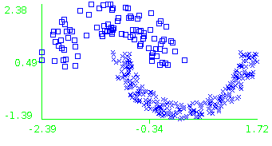
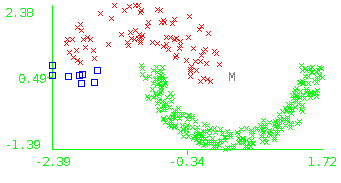
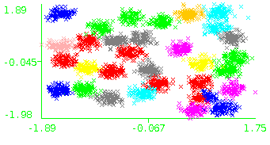

Introduction to Machine learning ( CS5011 )
Programming assignment #3
Aravind S
EE14B013
14th Nov. 2016
1 Conversion
ARFF is a popular format for data storage which is compatible with many popular packages like Weka. It has 2 components, header and data.
- The header mentions the optional name and the data type of that feature. Here, the first two attributes in all datasets are numerical and the last attribute was categorical.
- The dataset is a 2-dimensional dataset with labels associated with every point.
As usual, I standardized the data before usage, which resulted in better performance. This is to ensure that L2-norm is a proper distance measure. It assumes the same weight given to both the features. As a result, one feature should not dominate the other. Hence, standardizing makes sure L2-norm is a good distance measure.
2 Visualisation
The standardized datasets have been visualised below.
Which algorithm to choose?
- K-means clustering works well for datasets with convex clusters.
- Hierarchical clustering ( HC ) with complete link meta-distance forces the obtained clusters to be spherical in nature. As a result, this works well for datasets with convex clusters.
- DBSCAN obtains non-convex clusters, but it requires good separation between two clusters ( otherwise the optimal (min pts, ϵ) is difficult to obtain ).
- Hierarchical clustering with single link meta-distance also obtains non-convex clusters. It is better than DBSCAN as we can specify the number of clusters needed, and hence more robust to noise in the datasets.
Having known this, we can obtain a qualitative estimate about which clustering algorithm performs well on the given dataset.
Aggregation
Since the points are nearly convex, K-means and HC-complete will work well. HC-single will work well except for the region between the clusters, which may get misclassified. DBSCAN works provided we have a high value for minpoints. This prevents the boundary points getting classified as outliers.
Compound
K-means and HC-complete will not work due to non-convex nature of certain clusters. DBSCAN will work for certain value of min-pts but might merge the points on the right ( the non-convex cluster points and the less-densely placed points surrounding it ). HC-single will also work as it obtains non-convex clusters, but might merge the above mentioned clusters.
D31
Since, the clusters are convex, K-means and HC-complete will work well. But results might be slightly different due to noisy points near the cluster boundary. DBSCAN will not work as the clusters are not well separated and there are a lot of noisy/overlapping points. Similarly, HC-single will suffer. But its output might be slightly better as we can specify the number of clusters we want, which can give a better partition between clusters.
Flames
K-means and HC-complete will not work due to non-convex clusters. Since the clusters are almost of uniform density and are well separated, DBSCAN and HC-single will work. It is necessary to choose the appropriate minpoints for DBSCAN.
Jain
K-means and HC-complete will not work well, as the clusters are not convex. Since, the clusters are well separated, DBSCAN and HC-single will work well. The performance here will be better than Flames as the clusters are better separated.
Path-based
Due to non-convex nature of clusters, K-means and HC-complete will not perform well. On the other hand, HC-single and DBSCAN will perform well on this dataset. Choosing wrong values of ϵ for DBSCAN might result in misclassification near boundary points. On the other hand, HC-single will perform better as there are no parameters to tune in it, except the number of clusters.
R15
The dataset has convex clusters and are well separated ( unlike D31 ). So, all algorithms will work well.
Spiral
Owing to the non-convex nature of clusters, DBSCAN and HC-single will work well for this dataset. K-means and HC-complete will not perform well on this dataset.
3 Performance of K-means on R15 dataset
For k = 8, the cluster purity is 0.533. The assigned clusters is shown below.

As the cluster size increases, the purity increases as well. This is because, the clusters are becoming more and more skewed. Theoritically, the cluster purity is 1.0 if k = n, where k is the number of clusters and n is the number of data points.

As the cluster size increases, the purity increases as well. This is because, the clusters are becoming more and more skewed. Theoritically, the cluster purity is 1.0 if k = n, where k is the number of clusters and n is the number of data points.

4 Performance of DBSCAN on the Jain dataset
As we all know, DBSCAN is very sensitive to parameters (minpoints, ϵ). Wrong choices of the parameters gives horrible clustering results. In order to obtain the correct choice of the parameters, I resolved to a grid-search over the (minpoints, ϵ) space. I observed that the variation of cluster-purity with the parameters is not predictable. So, I am reporting all the results observed.
I varied ϵ from 0 to 1 in steps of 0.05 and minpoints from 1 to 20 in steps of 1. Once an optimal range for ϵ and minpoints are obtained, the values are finetuned to get best performance. The following observations were made.
I varied ϵ from 0 to 1 in steps of 0.05 and minpoints from 1 to 20 in steps of 1. Once an optimal range for ϵ and minpoints are obtained, the values are finetuned to get best performance. The following observations were made.
-
For large values of ϵ, DBSCAN identifies a large number of core points and as a result classifies the entire data into a single cluster. This resulted in a cluster purity of around 0.74. The visualisation shown below was obtained for minpoints = 11 and ϵ = 0.9. Note, no points were flagged as OUTLIERS.
 - For large values of minpoints, less number of core points are identified and hence, many points are flagged as NOISE.
- Excluding the above configurations, the reasonable range of values are minpoints between 11 and 17 and ϵ around 0.1.
-
The best purity for 2 clusters was obtained, when ϵ = 0.08 and minpoints = 2, for which the purity was 0.9785. This resulted in 8 outliers and the remaining clustered. The results are visualised below.

5 DBSCAN Vs Hierarchical clustering on Path-based, Spiral and Flames datasets
DBSCAN
To obtain the optimal values of ϵ and minpoints, grid-search is followed. I varied ϵ from 0 to 1 in steps of 0.05 and minpoints from 1 to 20 in steps of 1. Once an optimal range for ϵ and minpoints are obtained, the values are finetuned to get best performance. The following observations were made.
The rough range for ϵ was around 0.1 and for minpoints, it is 2 to 9. The results are tabulated below.
The rough range for ϵ was around 0.1 and for minpoints, it is 2 to 9. The results are tabulated below.
| Performance of DBSCAN on the Path-based, Spiral and Flames datasets | ||||||
| Dataset | Classes | Epsilon ϵ | Minpoints M | Clusters | Outliers | Purity |
| Path-based | 3 | 0.07 | 9 | 3 | 107 | 0.9933 |
| Spiral | 3 | 0.1 | 2 | 3 | 0 | 1.0 |
| Flames | 2 | 0.1 | 9 | 2 | 3 | 0.9875 |
Hierarchical clustering
Weka supports a number of linkTypes like single, complete, average, mean, centroid, ward, adjcomplete and neighbour_joining. Generally for non-convex clusters, ward and single link types prove to be efficient in clustering.
After experimenting with all possible link types, the results are summarised below.
After experimenting with all possible link types, the results are summarised below.
| Performance of Hierarchical clustering on the Path-based, Spiral and Flames datasets | |||
| Dataset | Clusters | Link type | Purity |
| Path-based | 3 | Ward | 0.7534 |
| Spiral | 3 | Single | 1.0 |
| Flames | 2 | Ward | 1.0 |
The above results are visualised below.

6 Analysis of D31 dataset
K-means
The performance of K-means is tabulated below. We can observe that K-means successfully identifies the 32 clusters for k = 32 with a cluster-purity of 0.879. The purity increases as we increase k. But, it saturates for large k. For instance, beyond k = 64, the value of cluster-purity remains almost constant around 0.966.
| Variation of cluster-purity with k | |
| No. of clusters k | Cluster purity |
| 32 | 0.879 |
| 40 | 0.897 |
| 48 | 0.957 |
| 56 | 0.965 |
| 64 | 0.967 |
| 128 | 0.966 |
DBSCAN
We can observe that the clusters are not well separated. As a result, DBSCAN doesn’t perform well. I did a grid-search by varying ϵ from 0 to 1 in steps of 0.05 and varying minpoints from 1 to 20 in steps of 1. As the clusters overlap, the number of clusters obtained is less. In all my trials, it doesn’t exceed 5.
The best cluster purity obtained was 0.1622 for ϵ = 0.05 and minpoints = 11.
The best cluster purity obtained was 0.1622 for ϵ = 0.05 and minpoints = 11.
Hierarchical clustering
Using the Ward’s linkage with 32 clusters we get a cluster-purity of 0.9632. It is visualised below.
